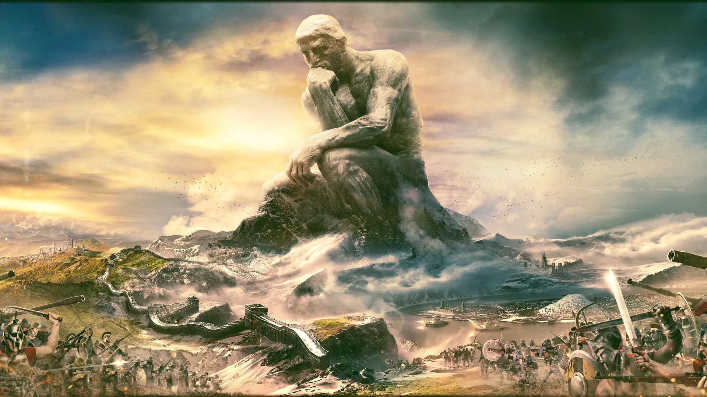
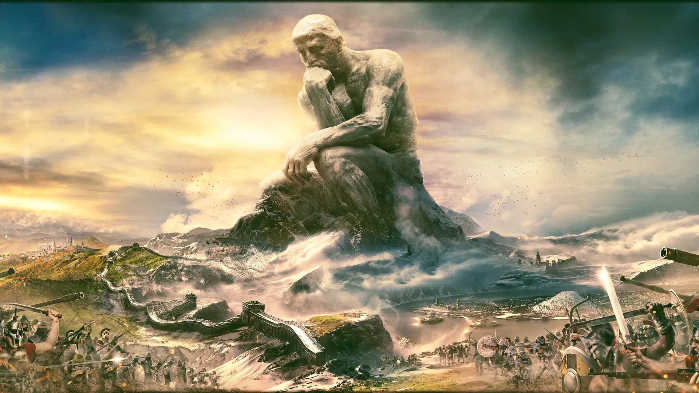

Hearts Of Iron IV
Hearts Of Iron IV to gra strategiczna w której gracz dowodzi państwem w okresie drugiej wojny. HoI4 ma wiele zaawansowanych mechanik, takich jak rozwój naukowy, produkcja wojskowa, budownictwo, cele narodowe i wiele innych.
Rozgrywkę Hoi4 uzupełniają liczne DLC(Additional content), czyli dodatki:

Lista dodatków
- Waking the Tiger
- Man the Guns
- La Résistance
- Together for Victory
- Death or Dishonor
- Battle for the Bosporus